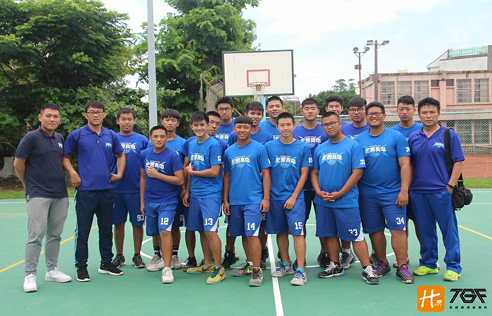

貼文時間：2017/06/23

105學年度藍色閃電左營高中，在邱思漢教練的帶領下，拿下高雄市第四名的成績，並勇闖南區複賽。但南區複賽的隊伍各支都是有備而來，勢不可擋，使比賽層級又更上層樓，面對高強度的賽事，球員們如何調整得宜，甚至打超出水準，這考驗著教練的思維，球員的臨場反應。步步為營，就是左營高中最佳的寫照...
邱思漢教練帶隊已有20多年歷史了，而邱教練最常與球員們說的話是：「左中是一個大家庭，每個人都是我的孩子。」整合生命教育，灌輸愛與分享的理念，翻轉思維，給教育更寬廣的未來，這就是藍色閃電為什麼壯碩的理由。
每日的訓練、汗水、每場比賽吸取的經驗，都是為了能在高中籃球殿堂上，為校爭光，不留下一絲遺憾，但籃球單單只是球技嗎? 徐召康大學長表示：「籃球離不開教育，人字雖兩撇， 做起來可不簡單。」贏球故然重要，但人品才是人生的重點，輸了人品，贏了球又如何？」
左中籃球隊，有著一群學長當他們的強力後盾，使他們無所畏懼，因為每個人都清楚自己的使命是什麼，不能讓學長們失望。每當休假時，各個學長總會帶著飲料到球場，關心並指導著球隊每個人，這就是左中大家庭最常見也最暖心的畫面。
哪兒有勤奮，哪兒就有成功，籃球是如此，人生更是如此。邱思漢教練表示：「年輕人有年輕人的風格，該給後輩(徐召康)機會，也許我們會更不一樣的。」接下新任教練的徐教練與這支藍色閃電會擦出什麼樣的火花呢，從新整裝出發的他們，又將如何翻轉我們的視野呢？我們拭目以待。